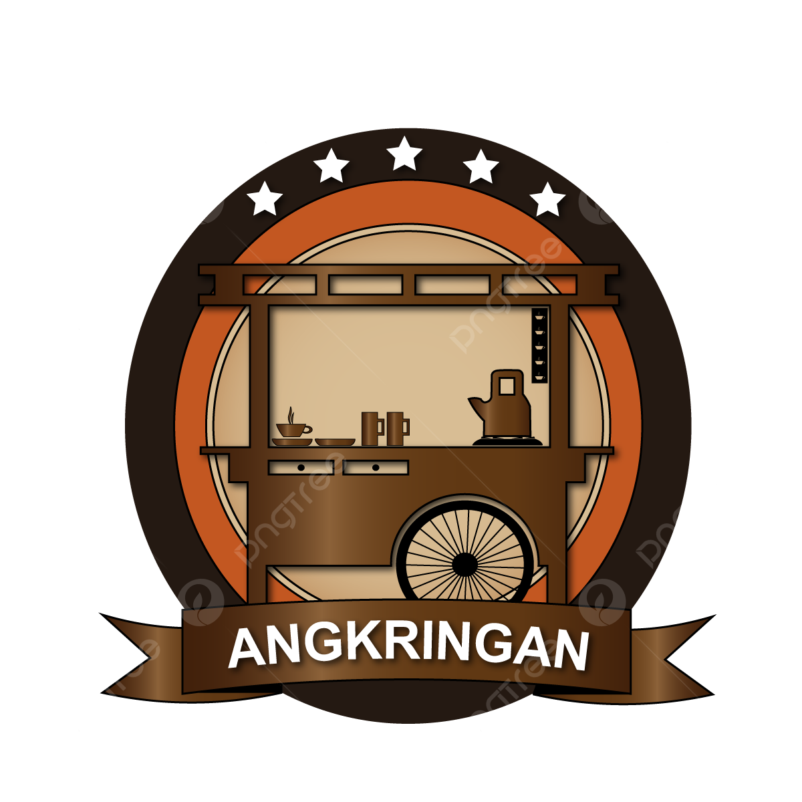

ANGKRINGAN TIARA
Tempat Nongkrong Favorit untuk Gen Z
Buka setiap hari mulai pukul 19:00 WIB sampai selesai
Nikmati berbagai pilihan makanan khas angkringan seperti sate-satean, nasi kucing, gorengan, dan minuman hangat maupun dingin yang cocok untuk menemani malammu. Suasana nyaman dan santai, cocok untuk nongkrong bareng teman, ngobrol santai, atau sekadar melepas penat setelah aktivitas seharian. Angkringan Tiara juga sering jadi tempat kumpul komunitas anak muda dengan vibe yang kekinian dan harga yang ramah di kantong.
Ayo nongkrong seru setiap malam di Angkringan Tiara, tempatnya Gen Z ngumpul dan berbagi cerita.